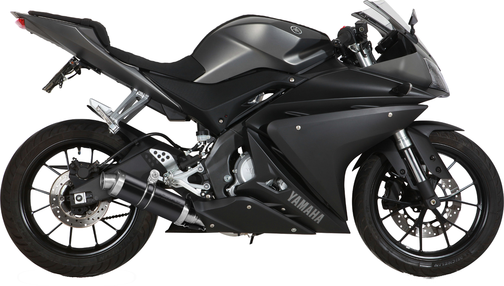

Autoryzowane części wymienne oraz tuningowe do Yamaha Yzf-r 125
(Nakieruj na elementy motocykla aby wyświetlić polecane przez nas części)

Krótki Opis Strony
Na tej stronie można znaleźć rzeczy wymienne i tuningowe
do yamaha yzf-r 125 polecane przez testerów i wyjeżdżonych
rajderów tego modelu
Na wyżej zamieszczonym obrazku klikając na poszczególne
części strona przekiweruje nas do zakupu produktów
najbardziej polecanych przez klientów